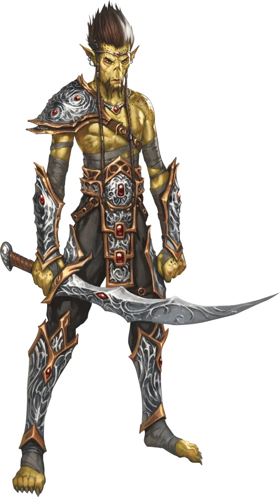
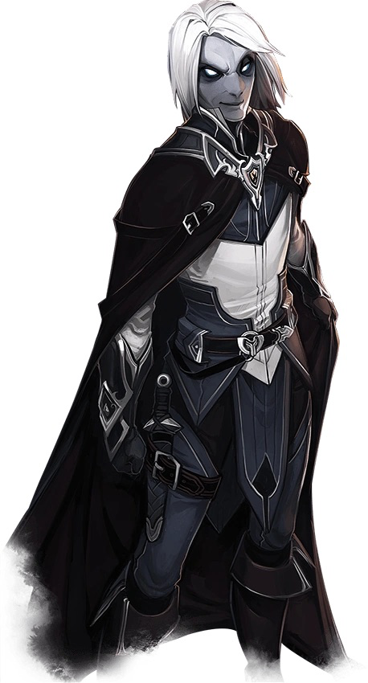

🌟 Exploring Advanced Races 🌟
1. Githyanki
Dungeons & Dragons 5th Edition offers a variety of advanced races beyond the traditional elves and dwarves. The Gith, once enslaved by the terrifying mind flayers, have forged their own destinies in the cosmos. The Githyanki, fierce warriors astride red dragons, roam the Astral Plane seeking conquest. Meanwhile, the meditative Githzerai wield incredible psionic powers, shielding themselves from the chaos of Limbo. Their deep lore and powerful abilities make them an intriguing choice for players who seek something beyond the ordinary.
2. Changeling
Other advanced races bring even more thrilling possibilities. The Changeling, a race of shape-shifters, can alter their appearance at will, slipping into different identities with ease. Spies, thieves, and actors find limitless potential in their fluid forms. The Yuan-ti Purebloods, descendants of ancient serpent cults, possess eerie magical abilities and cold, calculating intellects. Immune to poison and wielding hypnotic charms, they weave their plots from the shadows. Meanwhile, the enigmatic Kalashtar exist between two worlds, their minds linked with dream spirits from a distant plane. These telepathic beings resist mind control and possess an inner wisdom beyond mortal understanding.